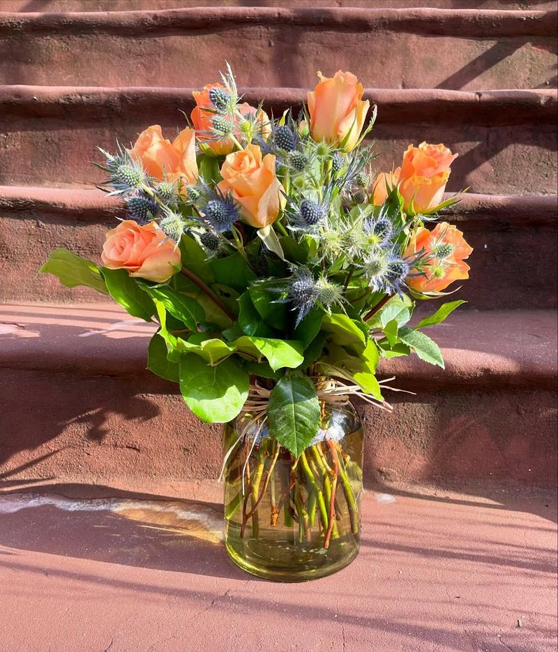
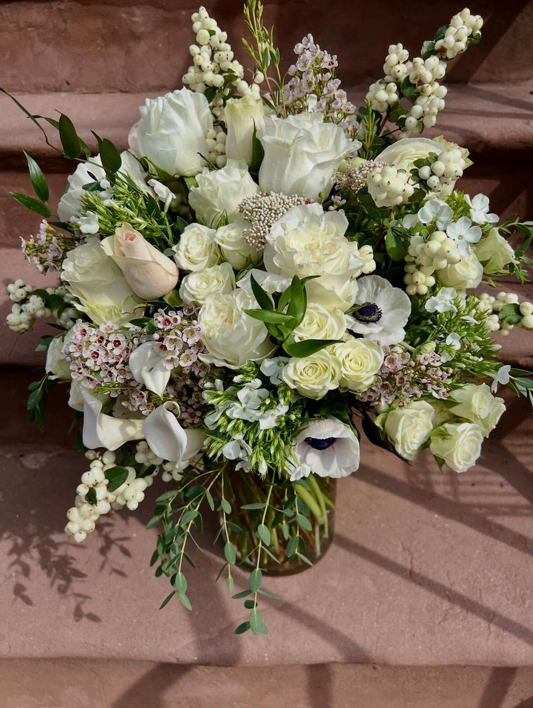
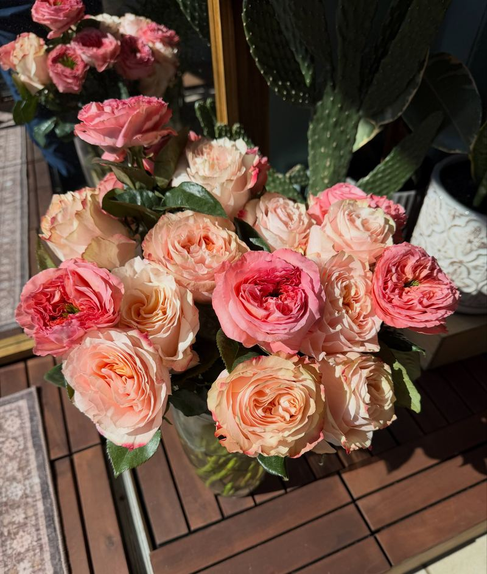
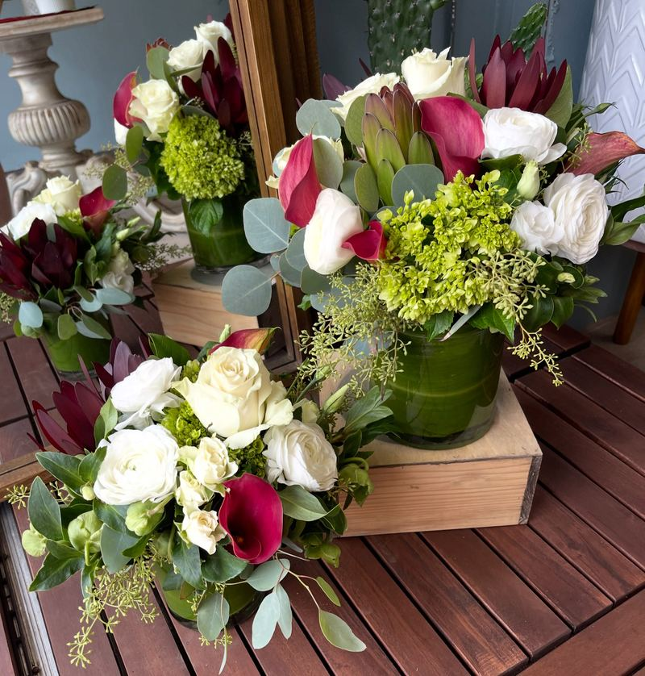
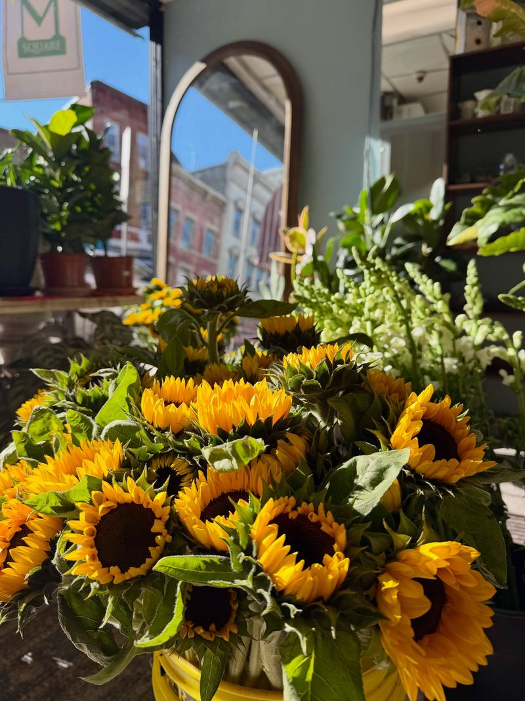
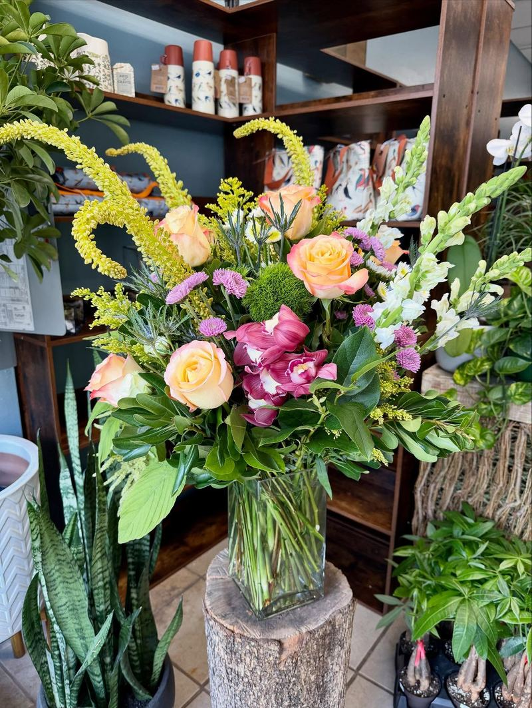
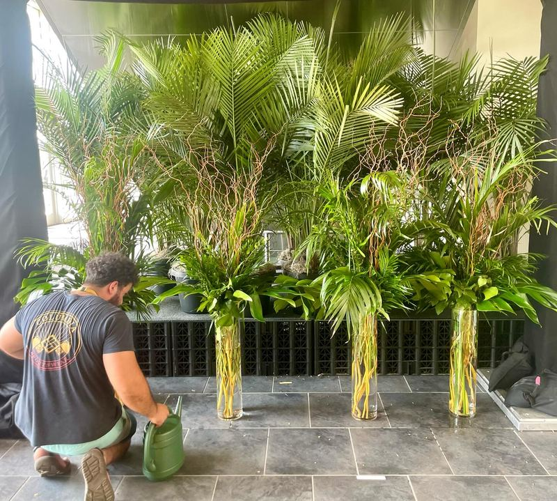
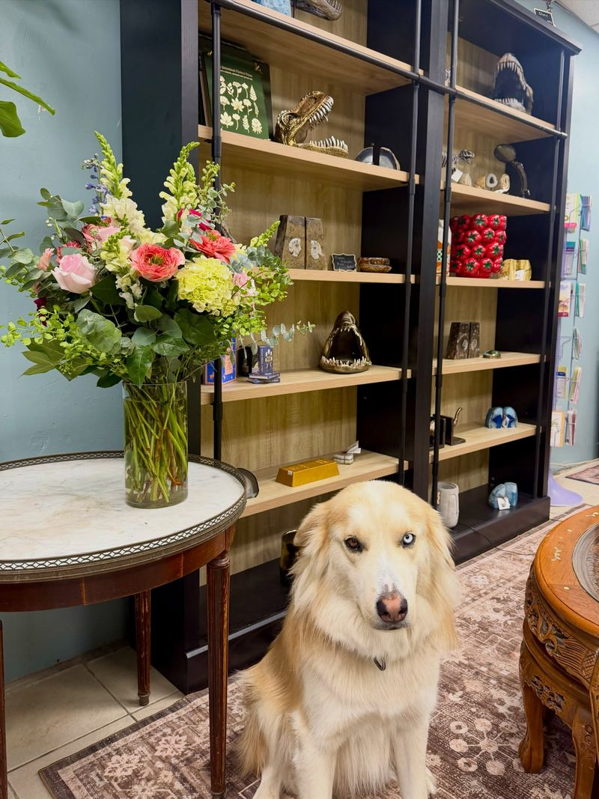
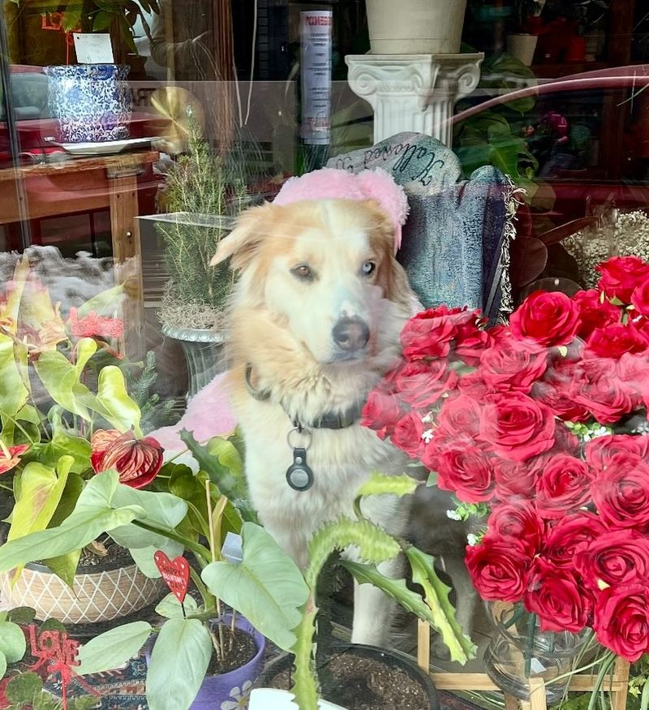

Garden rosesSunflowersCalla liliesAnemonesBlue thistleSnapdragonsTerrariumsEvent palmsSame-day in Jersey CityGarden rosesSunflowersCalla liliesAnemonesBlue thistleSnapdragonsTerrariumsEvent palmsSame-day in Jersey City
Our flowers, our photosMade here. Shot on the stoop.
Every arrangement on this page came out of our shop at 741A Bergen Ave. No catalog pictures, no stock photos. What you see is what we make.

Peach roses & blue thistle FEB ’25

White roses, anemones, stock OCT ’25

Pretty in pink: garden roses OCT ’26

White roses, burgundy callas, green hydrangea · Sept ’26

“It’s always sunny on Bergen Avenue”

End-of-summer mix, in the shop
Order for delivery
Today’s board.
Tap any item to order through our secure online shop, same as always. Want something that isn’t here? Call and tell us your colors.
Our drivers know every block of Jersey City, and we cover Hudson County too. Homes, hospitals, offices, funeral homes, venues. The exact delivery fee shows at checkout.
Jersey CityHobokenBayonneUnion CityWest New YorkWeehawkenNorth BergenSecaucusKearnyHarrisonGuttenbergEdgewaterCliffside Park

Setting up palms for a FIFA Club World Cup event, summer 2025
Weddings · Corporate · Plantscapes
Bigger jobs, same shop.
Erika and George have designed large-scale weddings and corporate events, and small intimate dinners too. Our team is hands-on from the first call to the last vase.
WeddingsBouquets, ceremony and reception flowers.
CorporateEvents, lobbies and standing weekly flowers. House accounts available.
PlantscapesIndoor and outdoor plants, plus gardening and landscaping: planting, hedges, weeding, power washing.
We’ll call you back during shop hours. In a hurry? (201) 433-2868.
1991
Our family business
First Bouquets & Baskets. Then Hudson Florist.
We opened in 1991 and we’re still family-owned. A lot of our flowers and plants are picked out at local greenhouses by our designers and staff, and everything is arranged by hand in the shop.
Contemporary or classic, a birthday bunch or a ballroom: it all comes off the same counter on Bergen Ave.

Our social media supervisor takes the job very seriously.

Adopted from AHS Newark. Window duty.
Come say hi.The shop dog is usually on the floor. The flowers are usually in the window.
New on the shelves
Gifts that aren’t flowers.
We’ve added gifts and home goods: terrariums, geodes, fossil bookends, and yes, a T-Rex skull. Come in and look around.
“They made a point to make sure to deliver it directly to her. She lives on the third floor and had surgery and couldn’t meet the delivery person downstairs.”Rose S. · Sept 2026
“A really beautiful set of flowers for my Mom’s funeral. Your delivery driver went above and beyond at the church.”Timothy C. · July 2026
“I ordered flowers from Barcelona, Spain. Despite the rainy weather, they did an outstanding job.”Arturo N. · June 2026